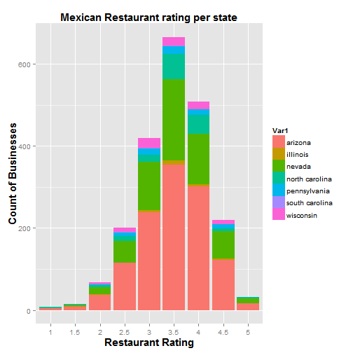

There are 95692 reviews for 2208 Mexican Restaurants in Data Set.
Majority of businesses are rated 3.5 and 4.
Restaruants in Arizona and Nevada had the most reviews in Data Set.


Data Scientist
Coursera Capstone Project
There are 95692 reviews for 2208 Mexican Restaurants in Data Set.
Majority of businesses are rated 3.5 and 4.
Restaruants in Arizona and Nevada had the most reviews in Data Set.
There are 54138 distinct Yelp Users that wrote 95692 reivews for Mexican Restaturants.
Reviewers that gave star rating of 4 for their reviews on average, wrote 80 reviews on average, 33 reviews for 5 star reviewers versus reviewers that gave ratings of 0,1,2 and 3 wrote 23 reviews on average combined.
Are there words used in 4 and 5 ratings that are not used in 0,1,2, 3 ratings?
50 most Frequent words used in mexican restaurants rated 4 or 5
Words used frequent: taco, great, place, love, like
50 most frequent words used in mexican restaurants rated 1 or 2 or 3
Words used most: Order, Time, good, like

We build a model to show the frequency of words used across good reviews ( 4/5 Ratings) and bad reviews(0/1/2/3 Ratings)
Created a Corpus of all words in all reviews
data <- filtered
corpus <- Corpus (VectorSource(data$text))
corpus <- tm_map(corpus, stripWhitespace)
corpus <- tm_map(corpus, removePunctuation)
corpus <- tm_map(corpus, content_transformer(tolower))
corpus <- tm_map(corpus, removeWords, stopwords("english"))
corpus <- tm_map(corpus, stemDocument)
Created a Matrix of 95692 * 332 for 332 words used at least in %3 of all 95692 reivews
dtm = DocumentTermMatrix(corpus)
sparse = removeSparseTerms(dtm, 0.97)
words = as.data.frame(as.matrix(sparse))
dim(words)
## [1] 95692 332
Seperated our data set to two sets: Training and testing
words$review_stars_bin <- data$review_stars_bin
levels(words$review_stars_bin) <- c ("bad", "bad", "bad", "bad", "good", "good")
set.seed ( 32343)
inTrain <- createDataPartition ( y=words$review_stars_bin, p=.75, list =FALSE)
training <- words[inTrain,]
testing <- words[-inTrain,]
We run our model. It had 82.3% accuracy
modelFit <- train(review_stars_bin~., data=training, method="glm")
predictions <- predict(modelFit, newdata=testing)
library(gmodels)
CrossTable(predictions, testing$review_stars_bin,
dnn=c("pridicted" , "Actual") ,
prop.t=FALSE, prop.c=FALSE, prop.r=FALSE , prop.chisq = FALSE)
##
##
## Cell Contents
## |-------------------------|
## | N |
## |-------------------------|
##
##
## Total Observations in Table: 23922
##
##
## | Actual
## pridicted | bad | good | Row Total |
## -------------|-----------|-----------|-----------|
## bad | 6183 | 1537 | 7720 |
## -------------|-----------|-----------|-----------|
## good | 2682 | 13520 | 16202 |
## -------------|-----------|-----------|-----------|
## Column Total | 8865 | 15057 | 23922 |
## -------------|-----------|-----------|-----------|
##
##
Our model identified some words like love, favorite, flavor , well, margaritta appear ONLY in "good" rating reviews. The word 'good' was used two times more in "good" rating reviews compared to "bad" rating reviews.